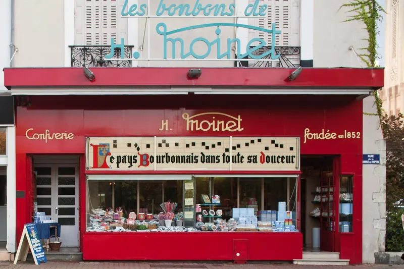

Vichy
03200 Vichy
Confiserie Moinet
La boutique historique, depuis 1852
4, rue de la Source de l’Hôpital03200 Vichy
- Du lundi au samedi
- 9h30–12h et 14h30–19h
- Dimanches d’août
- 10h15–12h15 et 15h–19h